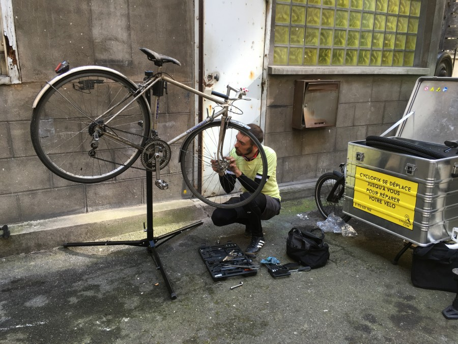

Nos mécaniciens se déplacent jusqu'à vous en moins de 15 minutes pour réparer votre vélo sur place. Ils sont équipés de vélo cargo électrique pouvant transporté moulte choses
Bien que le but premier de notre service est que vous repartiez quoi qu'il en coûte en vélo, nos réparations sont de qualités et faites pour durée dans le temps. Nos mécanos sont des experts en qui vous pouvez avoir confiance les yeux fermés.
Sinon nous prenons votre vélo pour l'amener jusqu'à notre atelier qui comporte le matériel nécessaire pour faire face à n'importe qu'elle panne. En échange nous vous prêtons un superbe vélo pour pouvoir dans tous les cas finir votre trajet en vélo